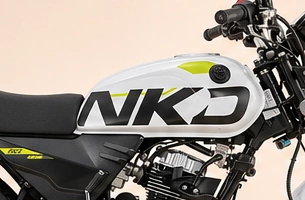
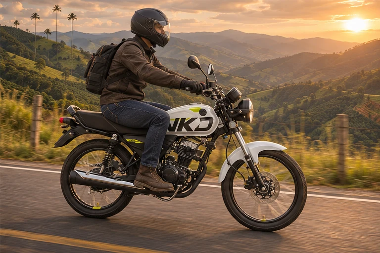

Diseño con almaEl universo MotoLab
El detalle marca la diferencia
Materiales honestos. Carácter propio.
Nacimos para acompañar tu camino.Hecha para rodar. Diseñada por ti.
Accesorios que van contigo. Pruébalos sobre una moto de referencia antes de elegir.
Empieza a personalizar Explorar accesorios AKT NKD 125
El siguiente nivel es tuyo.
AKT NKD 125
El siguiente nivel es tuyo.
Tu próxima versión, en 3 pasos
Empieza con nuestra NKD 125. Una base para darle forma a tus ideas.
Selecciona los accesorios y mira cómo cambia el estilo de la moto.
Añade, quita y compara hasta que se sienta completamente tuya.
Pequeños cambios. Grandes diferencias.

Diseño con almaEl universo MotoLab
Materiales honestos. Carácter propio.
Nacimos para acompañar tu camino.
No es solo lo que llevas.
De la rutina a esa curva que no conocías. Equipa tu moto para los planes que vienen, y para los que todavía no tienes.
Crea tu próxima versión ↗Tu moto es solo el principio.
Juega con los accesorios. Encuentra tu estilo.